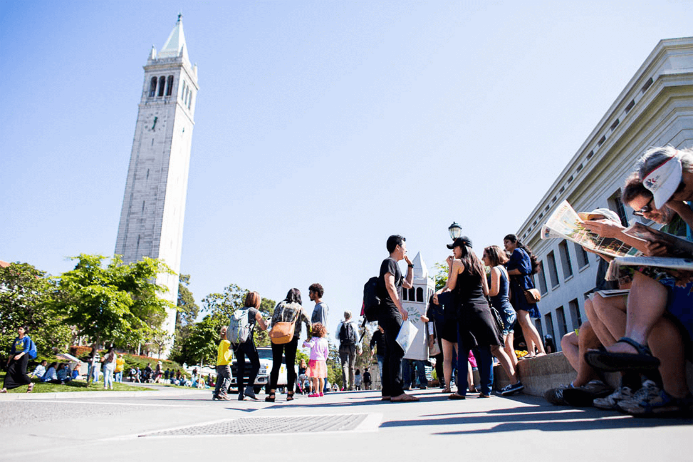

Our Roots
In 1891, Berkeley faculty started teaching courses in history, philosophy, mathematics and English to the public in San Francisco, with great success (over 800 learners in the first fall semester). This initiative came to life as a reaction to calls from the Californian people to make the university’s education offerings more accessible and to fully embrace its mission as a land grant university. Indeed, until today, the University of California is bound “to serve society as a center of higher learning, providing long-term societal benefits through transmitting advanced knowledge, discovering new knowledge, and functioning as an active working repository of organized knowledge” 1 . For the founders of the university’s Extension, this mission meant providing access to learners of all ages and as a consequence, they pioneered the uniquely American concept of lifelong learning through continuing education. In fact, the name of ‘lifelong learning’ was coined by one of Extension's first deans, Sean J. Richardson. The reason for the creation of the University of California as well as its Extension in the late 19th century, was to accelerate the economic development of California to catch up with the roaring industrialization on the East Coast (Picture 1). However, before Extension was born, the university consisted only of a few posh buildings and a theater on a remote hill, in the vicinity of the sleepy East Bay town of Berkeley (Picture 2). Privileged sons and daughters of wealthy families were studying and preparing themselves for high level positions in research, politics, public administration, and business. With the idea to give access to its excellent educational offerings to people of all ages, who would attend a single course at a time, while working, Extension breached the gap of academia and professional world, and created one the most advanced and successful continuing education department in history.

Our Reach
The central concept of Extension, as envisioned by it’s first proponents, notably the two UCPresidents, Edward S. Holden and Horace Davis, has always been the accessibility to the courses offered by our instructors. Consequently, Extension courses took place where the learners worked and lived, not on the remote campus in Berkeley. After the immediate success of its first courses, the regents officially adopted an extramural instruction plan that formally established the University Extension on Valentine’s Day, February 14, 1893. The concept of accessibility and the willingness to go towards the learners led Extension to constantly innovate new ways of reaching learners, for example, in 1928 Extension teaches on commuter trains, in 1945 Extension taught over 26,000 learners via its correspondence courses, in 1994 Extension ventures into online education and in 2012 Extension creates the UC’s first online course production department BRCO. Today, in part due to the global pandemic, Extension has developed the capacity to reach learners beyond the bay area with live instruction. Learners from anywhere in the world are now able to join our courses and we can help them, to launch or change their careers, to support their families, and share their knowledge and the Berkeley mindset.